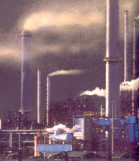

In December 1999, when the Environmental Protection Agency (EPA) ordered 392 electric generating power plants in the Midwest and South to cut their emissions in half, New York State breathed a toxic sigh of relief. The Empire State, along with most of New England, had been fighting for clean air and acid-free rain for nearly 30 years when the EPA took its longoverdue stand. Since the Clean Air Act of 1970 was amended to the Constitution, older coal-burning power plants from West Virginia to Illinois have been allowed to skirt federal emission standards through a loophole known as the "grandfather clause." Unfortunately for those states downwind, already-existing plants were not required to pay to modernize their equipment. Now, says the EPA, enough is enough.
Nevertheless. New York is not satisfied. In an attempt to further choke off smog-producing smokestacks, the state passed a bill in May, that directly challenges yet another loophole in the Clean Air Act: pollution credits. It is the first and only legislation by a state against the federal act, which allots credits to power plants when they meet federal emission standards. Much like stock options, these credits - introduced and ratified by the U.S. Congress as part of the Clean Air Act of 1990 - can be bought and sold on an open market so that dirty plants who can't or are unwilling to meet federal clean air standards can pay for the right to pollute by acquiring credits from those that can. In passing the bipartisan legislation by a vote of 59-0, the Republican-controlled state Senate seeks to regulate sales of pollution credits from cleaner New York power plants to smog producing out-of-state plants.
"New York has been voluntarily paying more for its electricity to reduce pollution for years," says John Sheehan of the Adirondack Council, an environmental group in Albany, New York, "to the point that it has the second cleanest utilities in the country right behind California. From an economic perspective it only makes sense to protect that investment by keeping our utilities from squandering it."
In forcing the issue, New York will no doubt be stepping on some toes in the private sector - utility companies in the state are already planning to bring suit, claiming that the bill violates the interstate commerce clause in the U.S. Constitution. Still, such groundbreaking legislation could prove to be infectious. According to Sheehan, every state from Maryland to Maine has asked for copies of the New York legislation, and New Hampshire is planning to draft its own version of the bill. The sooner clean air is a nationwide mandate, the sooner we can all breathe a little easier.
- Sam Martin
|
 |
|
|